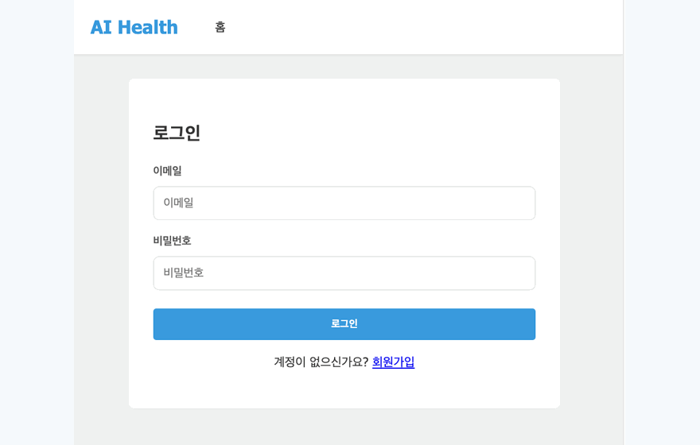
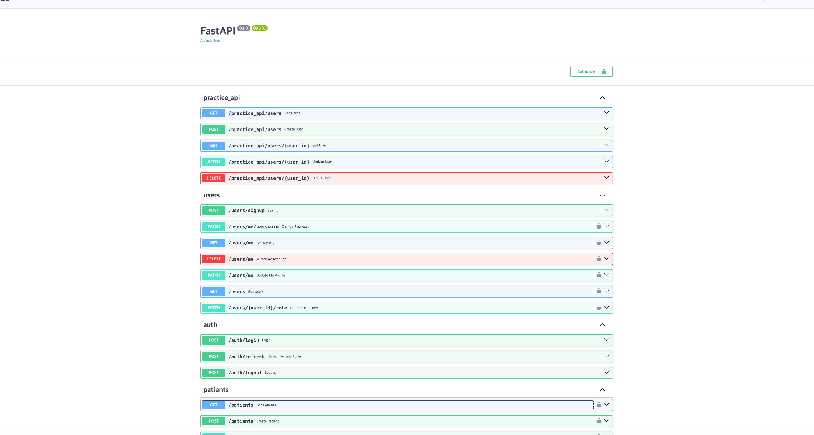
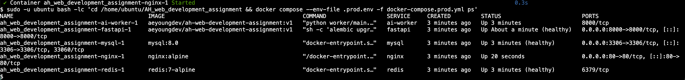
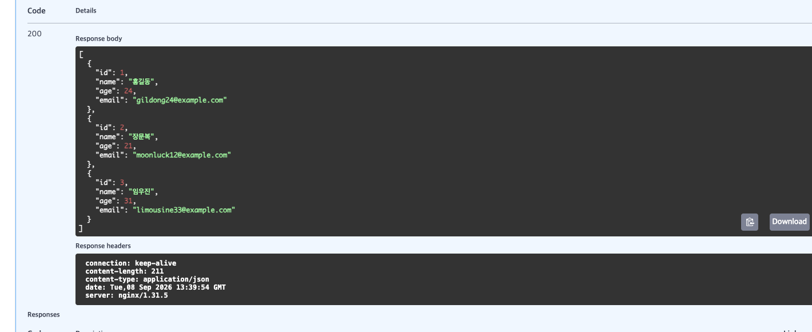

환자·진료기록 관리
환자 등록·검색·수정·삭제와 진료기록 및 X-ray 업로드를 지원합니다.
AI HEALTHCARE · FULL-STACK TEAM PROJECT
환자 진료기록에 등록된 흉부 X-ray를 SimpleCNN으로 분석하고 폐렴 여부와 신뢰도를 제공하는 의료 지원 웹 서비스입니다.
담당: AI 모델 로딩·추론, Redis 기반 예측 연동, 프론트 결과 연결, AWS EC2 공통 환경 준비
01
OVERVIEW
회원과 권한, 환자, 진료기록, X-ray 업로드, AI 폐렴 예측을 하나의 웹 서비스로 연결했습니다. 예측처럼 오래 걸릴 수 있는 작업은 API 서버와 분리해 동시 요청 상황에서도 일반 기능에 미치는 영향을 줄였습니다.
환자 등록·검색·수정·삭제와 진료기록 및 X-ray 업로드를 지원합니다.
흑백 X-ray를 128×128로 전처리한 뒤 SimpleCNN으로 정상과 폐렴을 분류합니다.
JWT 인증과 STAFF·ADMIN 역할 검증으로 의료 데이터와 예측 기능의 접근 범위를 관리합니다.
같은 진료기록과 같은 모델의 기존 결과가 있으면 재추론하지 않고 저장된 결과를 반환합니다.
02
ARCHITECTURE
FastAPI는 인증·입력 검증과 작업 생성을 담당하고, Redis Queue가 작업을 보관합니다. AI Worker는 작업을 가져와 모델을 실행한 뒤 Pub/Sub으로 결과를 전달하며 FastAPI가 최종 결과를 MySQL에 저장합니다.
03
MY ROLE
제공된 모델 파일을 단순히 호출하는 데서 끝내지 않고, 모델 구조 확인부터 API·Redis·화면·배포 환경까지 예측이 사용자에게 도달하는 전 과정을 연결했습니다.
모델 분석: state_dict 텐서 구조를 확인해 SimpleCNN 구조와 1채널·128×128 입력 조건을 맞췄습니다.
추론 구현: 모델 로딩, 이미지 전처리, softmax 확률 계산, NORMAL/PNEUMONIA 결과 변환을 함수로 분리했습니다.
환경 호환성: CPU·CUDA·Apple MPS를 감지하고 CUDA에서 저장된 가중치도 CPU를 거쳐 안전하게 불러오도록 처리했습니다.
비동기 연동: FastAPI가 Redis Queue에 작업을 등록하고 Pub/Sub 결과를 기다리는 흐름과 타임아웃·Worker 오류 처리를 구현했습니다.
프론트 연동: 환자 ID와 진료기록 ID를 포함해 예측 API를 호출하고 폐렴 여부와 Confidence를 화면에 반영했습니다.
배포 준비: AWS EC2, SSH, Docker·Compose, 2GB Swap 환경을 준비하고 팀원이 재접속할 수 있도록 운영 정보를 인계했습니다.
04
PRODUCT WALKTHROUGH
로그인 → 환자 조회 → 진료기록 및 X-ray 등록 → AI 예측 → 마이페이지의 핵심 사용 흐름입니다. 라이브 EC2가 중지되어도 기능을 확인할 수 있도록 GIF로 기록했습니다.

시연 화면의 127.0.0.1 주소는 개발 컴퓨터 자체를 가리키는 로컬 주소이며 실제 배포 서버 주소가 아닙니다.
05
DEPLOYMENT PROOF
Nginx, FastAPI, AI Worker, Redis, MySQL의 5개 컨테이너를 Docker Compose로 실행하고 Swagger UI 노출과 외부 GET 요청의 HTTP 200 응답을 확인했습니다.



※ 포트폴리오 공개를 위해 배포 증빙 이미지에서 EC2 공개 IP 등 운영 식별 정보는 제거했습니다.
06
ENGINEERING DECISIONS
전체 객체 pickle보다 구조를 코드로 명시해 로딩 과정을 이해하고 안전하게 관리했습니다.
AI 추론이 일반 API 요청을 붙잡지 않도록 Producer와 Worker의 책임을 분리했습니다.
비용 절감을 위해 EC2를 중지해도 결과를 확인할 수 있도록 화면과 GIF를 남겼습니다.